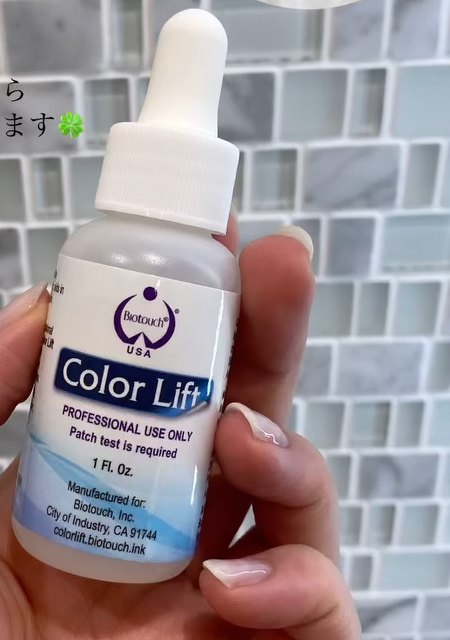

「昔入れたアートメイクの色が気になる」「唇にシミがあって、リップを塗っても隠れない」——色を“足す”のではなく“抜きたい”お悩みもあります。そんなときの選択肢のひとつが、専用の薬剤で色素を少しずつ外へ出していく薬剤除去です。この記事では、仕組み、向いているお悩み、施術後の経過、アートメイクとの付き合い方まで、実際の経過写真をもとにkomiがお伝えします。
薬剤除去は、肌に専用の薬剤を使い、肌の中にある色素（メラニンや過去のアートメイクの色）を1〜3か月かけてゆっくり分解・排出させていく施術です。レーザーのように熱で壊すのではなく、肌の生まれ変わりに合わせて少しずつ外へ出していくのが特徴です。

1回で大きく変えるというより、1回〜複数回の施術で、少しずつ改善を目指すものです。どのくらい薄くなるかは、色素の深さや量、肌の状態によって変わります。
※ 施術は提携医療クリニック内で行います。効果の出方や必要な回数には個人差があり、完全に消えることを約束するものではありません。薬剤の準備が必要なため、事前のご予約が必要です。
| 施術 | やること | 向いているお悩み |
|---|---|---|
| アートメイク | 色を入れて足す | 血色・形・左右差を整えたい |
| 薬剤除去 | 色素を分解して外へ出す | シミや過去のアートメイクを薄くしたい |
| アマラピンク | 薬剤でメラニンを外へ出し、本来の色に近づける | 乳輪・デリケートゾーン・唇などの黒ずみ |
「色を足したい」ならアートメイク、「くすみやシミを薄くしたい」なら薬剤除去、というのが基本の考え方です。くすみを薬剤除去で整えてから、リップアートメイクで血色を足すという組み合わせもあります。アマラピンクについてはアマラピンクの解説をご覧ください。
実際に唇のシミ（左下の2つ）を薬剤除去したお客様の経過です。過去にリップアートメイクを受けている方でした。
| 時期 | 肌の様子 |
|---|---|
| 施術翌日 | 乾燥と、少しのひりつき。 |
| 3〜4日目 | かさぶた・皮むけが出て、自然にはがれていきます。 |
| 5日目〜1週間 | 目立つダウンタイムはおおむね1週間ほどで落ち着きます。 |
| 1か月後 | シミが目立ちにくくなり、唇の色が均一に近づきました。 |
ダウンタイム中は、保湿を続けること、紫外線を避けること、こすらないことが大切です。かさぶたや皮は無理にはがさず、自然に落ちるのを待ってください。洗顔のときにタオルでこすってしまうと、はがれるのが早くなることがあります。
濃く入りすぎた眉や、時間がたって色が変わったアートメイクも、薬剤除去でトーンを下げていくことができます。1回で消すのではなく、回数をかけて少しずつ薄くしていくイメージです。薄くしたあとに、今のお顔立ちに合う形や色でアートメイクをし直す方もいます。
他院で入れたアートメイクの修正については、アートメイクの修正・やり直しの解説もあわせてご覧ください。
妊娠中・授乳中の方、施術部位に炎症や傷がある方、肌がとても敏感な方などは、施術をお控えいただくか、事前の確認が必要です。薬剤はパッチテストが必要なものを使うため、体質や肌の状態によってはお受けいただけない場合があります。最終的な施術の可否は、医師の判断で決まります。
1回で消えますか？
1回で完全に消すものではありません。色素の量や深さによって、1回〜複数回をかけて少しずつ薄くしていきます。
ダウンタイムはどのくらいですか？
目立つダウンタイムは1週間ほどで落ち着くことが多いです。数日目からかさぶた・皮むけがあり、仕上がりは1か月ほどかけて見ていきます。
レーザー除去とは何が違いますか？
レーザーは光の熱で色素を壊しますが、薬剤除去は専用の薬剤で色素を分解し、肌の生まれ変わりに合わせて外へ出していきます。どちらが合うかは色や部位によって変わるため、カウンセリングでご相談ください。
料金はいくらですか？
部位や範囲、回数によって異なります。お写真を送っていただければ目安をご案内しますので、LINEからお気軽にご相談ください。
薬剤除去は、唇のシミやくすみ、過去のアートメイクなど、「色を抜きたい」お悩みに向けた施術です。1〜3か月かけて少しずつ色素を外へ出していくため、焦らず経過を見ていくことが大切です。「この色、薄くできる？」と迷ったら、まずは写真を添えてご相談ください。
「こんなお悩み、相談していいのかな」——その一歩を、komiは何度も見てきました。まずは無料カウンセリングで、あなたの状態に合うかどうかだけでも確認しにきてください。
カウンセリングは無料です。デリケートなお悩みもプライバシーに配慮して伺います。
LINEの文章だけのご相談でも大丈夫です。